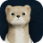

Aion 2 · Global · Stagione 1
Guide alle classi
Una guida per classe, scritta per essere letta in fretta: cosa livellare, come giocare la rotazione e quale equipaggiamento cercare.
Le altre classi arrivano una alla volta.

Aion 2 MarketUna guida per classe, scritta per essere letta in fretta: cosa livellare, come giocare la rotazione e quale equipaggiamento cercare.
Le altre classi arrivano una alla volta.